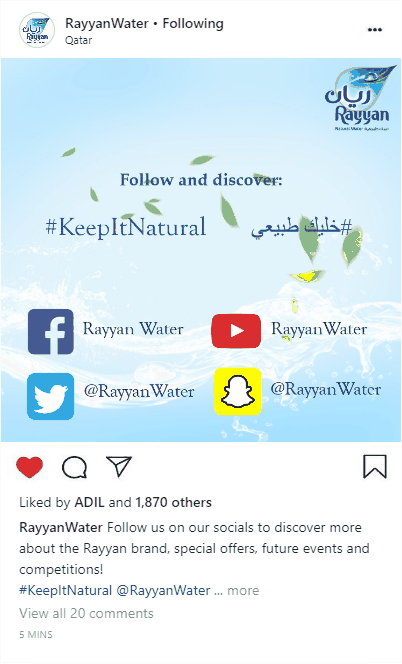
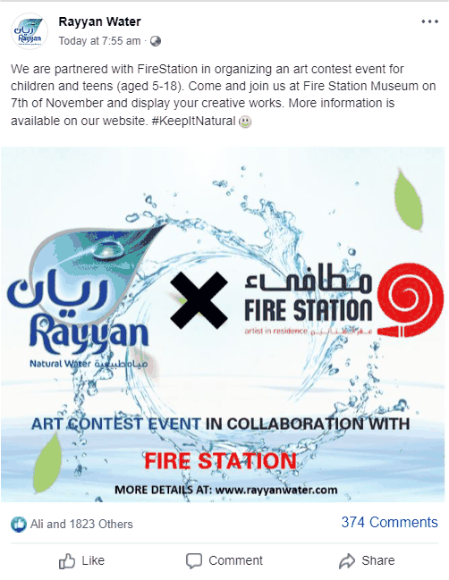

Case Study — IMC Campaign
Rayyan Water — "Keep It Natural" Campaign
A full integrated marketing communications campaign for Rayyan Water, Qatar's local natural-water brand — built on primary consumer research and a 4-week multi-channel rollout timed around the 2022 FIFA World Cup.
Overview
Rayyan is a Qatari-owned natural water and tissue brand, founded in 1984 in partnership with Evian. Operating as a student marketing agency ("Mind & Metrics"), our team of six was tasked with researching Rayyan's brand position and designing a full integrated marketing communications (IMC) campaign — from consumer research through to a costed, channel-by-channel execution plan.
Research
We ran both qualitative interviews (15 minutes each, with a Rayyan consumer and a non-consumer) and a quantitative online survey that reached 71 respondents in just a few days via social media, Reddit, and Qatar Living.
The results were strongly favorable on product quality, availability, and trust — but exposed a real gap in advertising consistency and recency, which became the central problem the campaign needed to solve.
Segmentation, Targeting & Positioning
Using a differentiated targeting strategy, we defined five target segments: environmentally-conscious teenagers, patriotic Qatari adults/elderly, Western residents with low brand awareness, tech-savvy teenagers, and health-conscious athletes.
Positioning statement: "For those who pursue value and quality, Rayyan offers natural, organic water that is locally produced and packaged in accordance with environmental concern unlike any other water brand, so they can feel inner peace and happiness because the brand strives to develop the ultimate customer value and satisfaction."
The Campaign: "Keep It Natural"
Slogan: "A beauty of nature — جمال الطبيعة." We used an emotional message strategy built around storytelling — connecting Rayyan's purity and local roots with community and (given the campaign's timing just before the World Cup) football. The 4-week rollout moved through the classic hierarchy-of-effects stages:
- Week 1 — Awareness: Instagram, Snapchat stories, a billboard on Al Waab Street, and Twitter polls.
- Week 2 — Brand Building: YouTube customer-interview videos, teaser posts, outdoor ads, TikTok.
- Week 3 — Engagement: an in-person "bottle flip challenge" at Katara, an art contest with Fire Station, an influencer partnership, and in-game advertising inside Battlefield 2042's Doha map.
- Week 4 — Behavioral: a "Golden Ticket" discount promotion, a bottle-cap symbol-collecting contest, and guerrilla marketing at Al Meera stores.


Campaign partners included Take Away, Al Meera, Qatar Airways, Electronic Arts, and Fire Station Studios — plus a collaboration with a Qatari social media influencer. Total campaign cost: QR 315,600 across social, outdoor, video, experiential, and in-game channels.
Evaluation & Recommendations
Evaluation combined Google Analytics on the campaign landing page with per-channel social metrics (followers, hashtag usage, story views, event attendance). Our core recommendations for Rayyan: tighten posting consistency across platforms, keep running reinforcement campaigns around the brand's natural/local positioning, and begin exploring diversification (e.g. flavored water) and GCC market expansion.